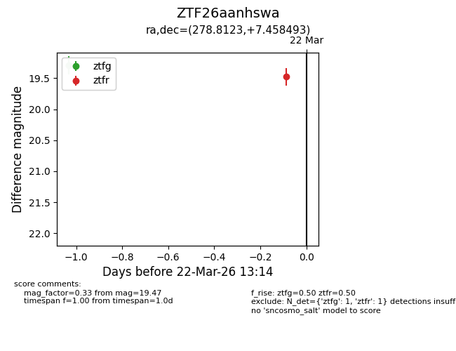
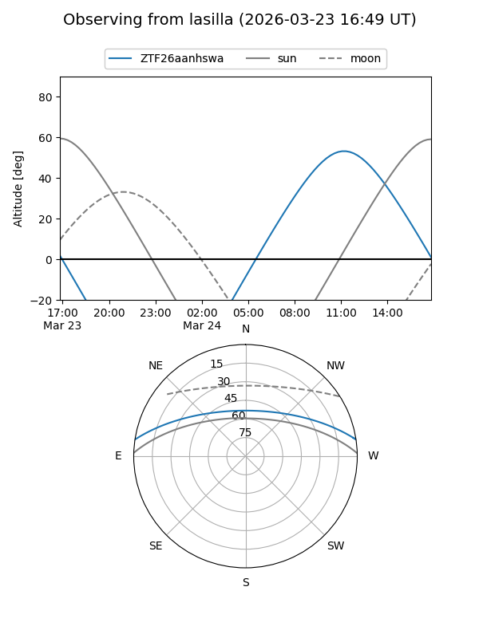
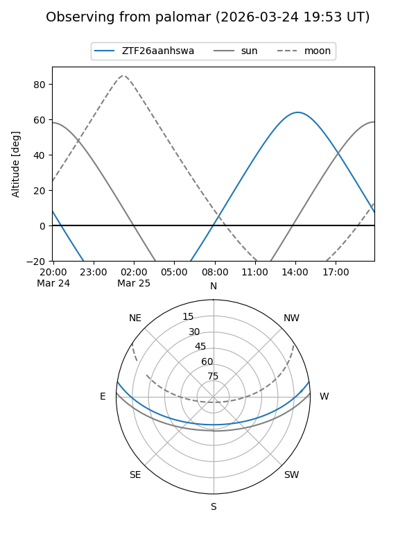
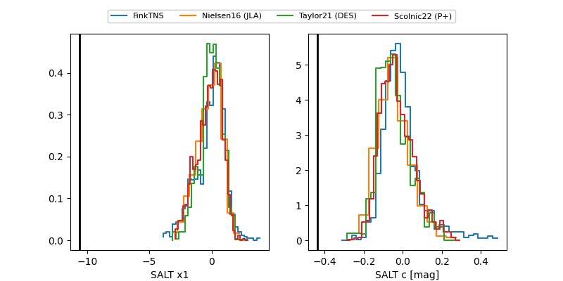

ZTF26aanhswa
Target ZTF26aanhswa at 2026-03-22 13:16
Aliases and brokers:
FINK: link
Lasair: link
ALeRCE: link
alt names
ZTF26aanhswa (ztf,fink_ztf)
Coordinates:
equatorial (ra, dec) = 278.8123,+7.45849
equatorial (HMS+DMS) = 18:35:14.96,+07:27:30.57
galactic (l, b) = (37.7643,+6.97705)
Flags:
Photometry:
last ztfg=19.29, ztfr=19.47
1 ztfg, 1 ztfr detections
Lightcurve

Visibility


Additional plots
